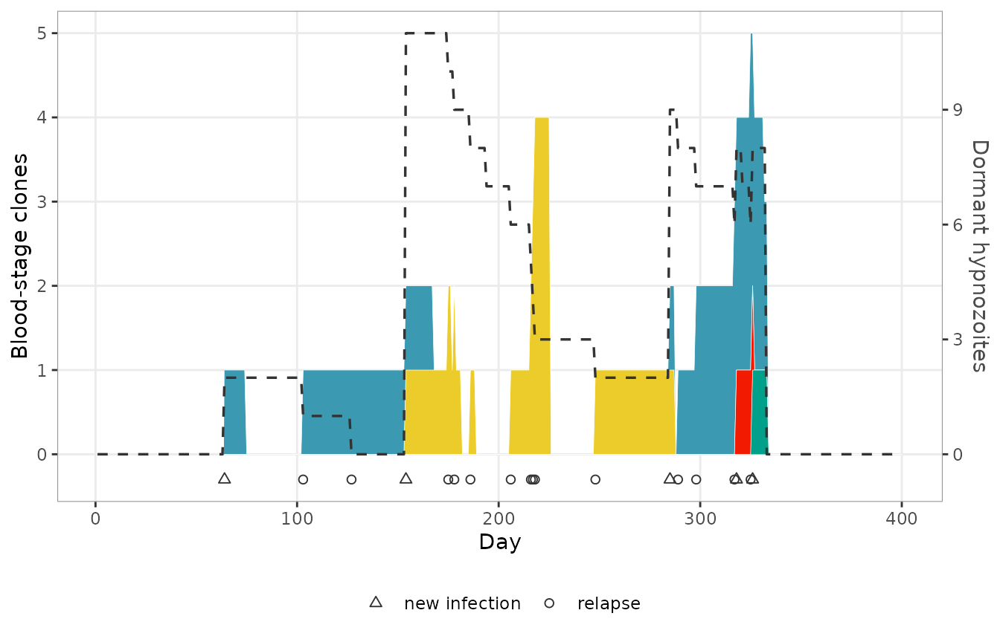
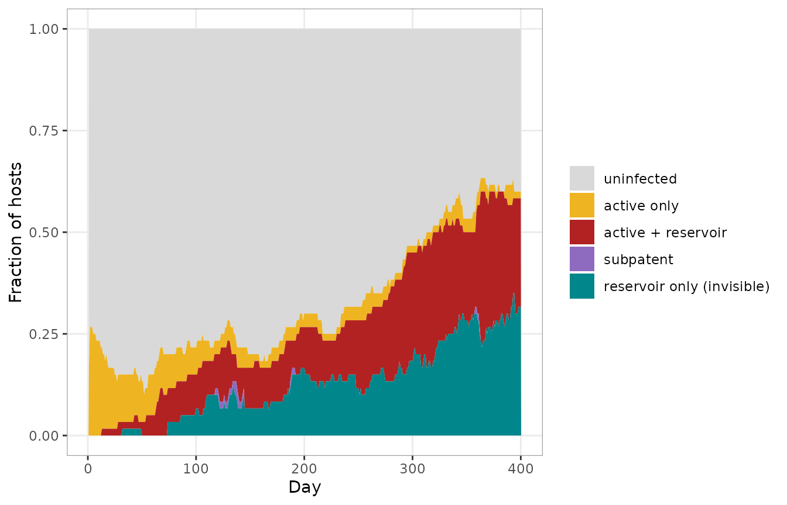
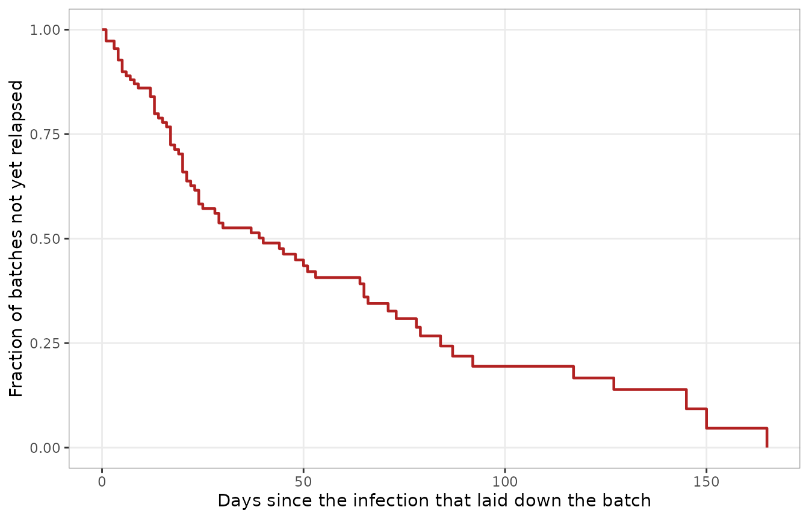
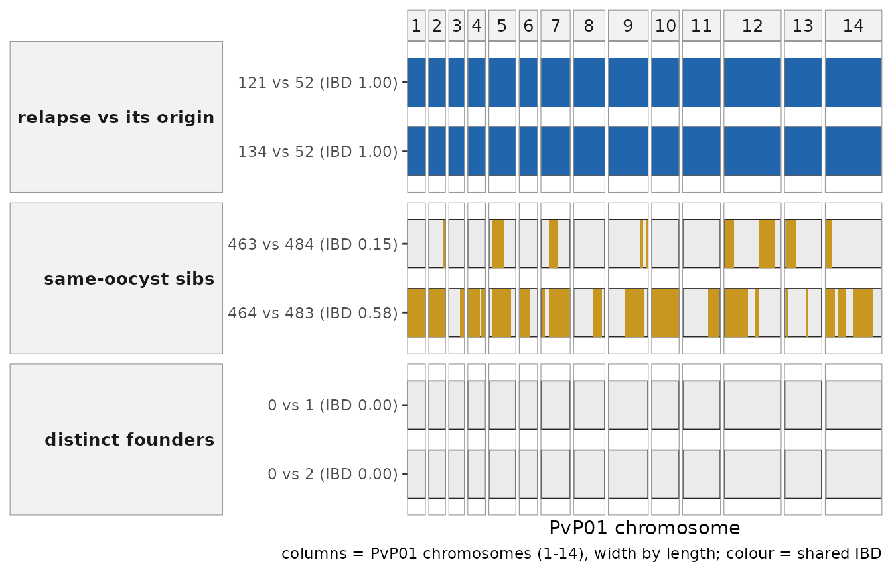
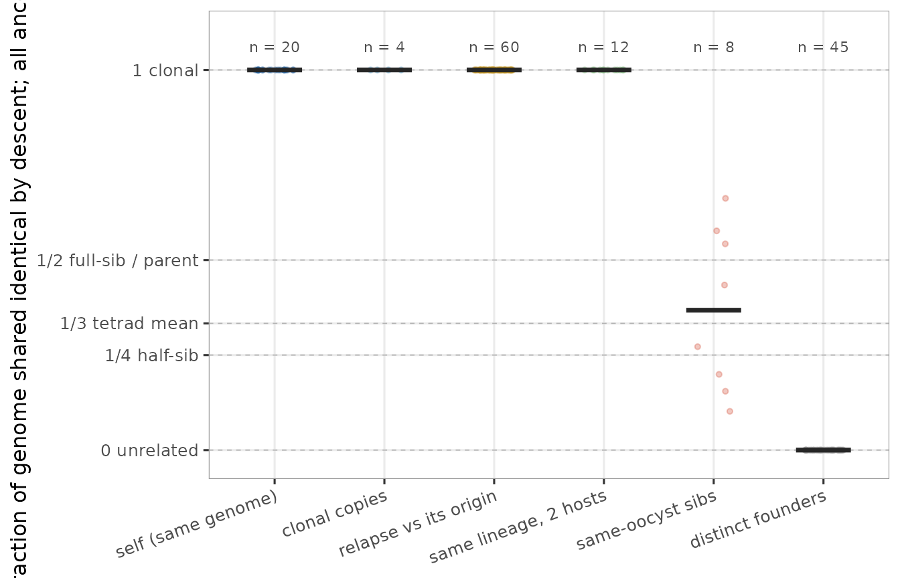

A single malariafwd run writes a handful of files into
its output directory. This vignette tours them — what each output means
and how to explore it. It reads example_run(), a run that
ships with the package: 60 hosts and 150 mosquitoes for 400 days, with
imports, case management, recrudescence and co-transmission (several
genotypes in a bite) switched on, so that every kind of case occurs. The
chunks that read the tree sequence need Python with tskit (see
check_setup()).
Run one simulation
With SLiM, a run of your own is one call (not run here):
p <- vivax_params(N_HOSTS = 100, N_MOSQ = 250, BITING_RATE = 0.1, SIM_DAYS = 548)
run <- run_sim(p, seed = 1, outdir = file.path(tempdir(), "anatomy")) # a few seconds on a laptopHere, the bundled run:
library(malariafwd)
run <- example_run()
dir(run$outdir)
#> [1] "cmdline.txt" "DONE" "events.tsv" "model.slim" "params.tsv"
#> [6] "plasmo.trees" "run.log" "state.tsv"run points at the output directory, which holds:
-
events.tsv— every discrete event (infections, clearances, relapses, mosquito uptake …) -
state.tsv— per-tick state of every host and mosquito -
plasmo.trees— the tskit tree sequence (the genealogy behind IBD) -
params.tsv,cmdline.txt,model.slim,run.log— provenance of the run -
DONE— written last: when the run finished, a key of its parameters and seed, and the size of every file, so a directory that is not a whole run can be told from one that is
?events.tsv and ?state.tsv describe every
column.
The event log
Every row of events.tsv carries an
event_type. event_types() is the
dictionary:
event_types()
#> event_type stage ends_episode is_onset
#> <char> <char> <lgcl> <lgcl>
#> 1: vh_inoculation blood FALSE TRUE
#> 2: vh_inoculation_import blood FALSE TRUE
#> 3: vh_inoculation_seed blood FALSE TRUE
#> 4: vh_inoculation_no_take blood FALSE FALSE
#> 5: vh_inoculation_import_no_take blood FALSE FALSE
#> 6: hypnozoite_activation blood FALSE TRUE
#> 7: recrudescence blood FALSE TRUE
#> 8: human_clearance blood TRUE FALSE
#> 9: case_bloodstage_clear blood TRUE FALSE
#> 10: mda_bloodstage_clear blood TRUE FALSE
#> 11: mda_subpatent_clear blood FALSE FALSE
#> 12: bloodcure_subpatent blood TRUE FALSE
#> 13: bloodcure_given blood FALSE FALSE
#> 14: radcure_given liver FALSE FALSE
#> 15: radcure_failure liver FALSE FALSE
#> 16: bloodcure_persist blood FALSE FALSE
#> 17: mda_bloodcure_given blood FALSE FALSE
#> 18: mda_radcure_given liver FALSE FALSE
#> 19: mda_radcure_failure liver FALSE FALSE
#> 20: hypnozoite_clearance liver FALSE FALSE
#> 21: radcure_hypnozoite_clear liver FALSE FALSE
#> 22: mda_hypnozoite_clear liver FALSE FALSE
#> 23: hv_uptake_clonal vector FALSE FALSE
#> 24: hv_uptake_recombinant vector FALSE FALSE
#> 25: mosq_death vector FALSE FALSE
#> event_type stage ends_episode is_onset
#> <char> <char> <lgcl> <lgcl>
#> description
#> <char>
#> 1: new local mosquito-borne blood-stage infection
#> 2: imported blood-stage infection
#> 3: founder blood-stage infection (burn-in seeding)
#> 4: a bite established neither a blood-stage infection nor hypnozoites (P_PRIMARY failed and the batch drew 0)
#> 5: an importation established neither compartment (P_PRIMARY failed and the batch drew 0), or its host was at MAX_MOI
#> 6: hypnozoite activates -> a blood-stage relapse (clonal to its origin)
#> 7: a suppressed clone re-expands to patency after a failed course; mints a new genome clonal to the holder (P_RECRUD_GIVEN_FAIL)
#> 8: blood-stage infection clears naturally
#> 9: blood-stage infection cleared by case-based treatment (BLOODCURE_COVERAGE)
#> 10: blood-stage infection cleared by mass drug administration (MDA_TICK), also one that became patent earlier that day (the day's imports arrive after the round)
#> 11: a suppressed clone cleared by MDA, so it never recrudesces; its patent episode had already ended at bloodcure_subpatent
#> 12: a clone survived treatment but was suppressed BELOW PATENCY; the patent episode ends here and the clone recrudesces later (P_RECRUD_GIVEN_FAIL), unless an MDA round clears it first (mda_subpatent_clear)
#> 13: a blood-stage course is given to a host (BLOODCURE_COVERAGE)
#> 14: radical cure is given to a host, nested inside a blood-stage course
#> 15: radical cure was given but the whole reservoir survived (RADCURE_MODE = person)
#> 16: a blood-stage clone survived treatment and continues at full density (P_BLOODCURE_SURVIVAL)
#> 17: a blood-stage course is given by MDA to a host not empty at the round (MDA_COVERAGE)
#> 18: radical cure is given by MDA
#> 19: MDA radical cure given but the whole reservoir survived
#> 20: a hypnozoite dies / clears in the liver
#> 21: hypnozoite reservoir thinned by case-based radical cure (RADCURE_COVERAGE)
#> 22: hypnozoite reservoir thinned by MDA
#> 23: mosquito takes up a clonal (selfed) oocyst genotype
#> 24: mosquito takes up a recombinant (outcrossed) oocyst genotype
#> 25: a parasite genome lost when an infected mosquito dies: one row per genome it carried
#> description
#> <char>
ev <- load_events(run) # a data.table
ev[, .N, by = event_type][order(-N)] # how many of each event type
#> event_type N
#> <char> <int>
#> 1: mosq_death 1206
#> 2: hv_uptake_clonal 797
#> 3: vh_inoculation 206
#> 4: hypnozoite_activation 158
#> 5: human_clearance 140
#> 6: case_bloodstage_clear 138
#> 7: hv_uptake_recombinant 114
#> 8: bloodcure_given 83
#> 9: hypnozoite_clearance 47
#> 10: vh_inoculation_import 41
#> 11: radcure_hypnozoite_clear 29
#> 12: radcure_given 22
#> 13: vh_inoculation_seed 16
#> 14: bloodcure_persist 11
#> 15: radcure_failure 5
#> 16: bloodcure_subpatent 5
#> 17: recrudescence 5Classify each blood-stage clone onset (“case”) by its true origin:
one row per clone, and the clones that became patent in one host on one
day share an episode_id. There are four
origins: relapse (a hypnozoite activated),
imported, local reinfection, and
recrudescence (a clone that survived a treatment course,
was suppressed below patency, and re-expanded). The fourth only appears
when treatment can fail and
P_RECRUD_GIVEN_FAIL > 0. At the shipped defaults there
is no treatment at all, so a default run shows three; the example run
has case management with recrudescence on, so it shows all four:
cs <- classify_cases(ev)
cs[, .N, by = origin]
#> origin N
#> <char> <int>
#> 1: local reinfection 113
#> 2: imported 23
#> 3: relapse 158
#> 4: recrudescence 5Every episode of a host after its first is a recurrence.
recurrences() pairs each with the host’s earlier episodes,
with both sides’ true origins; episodes() gives every
clone’s span.
rec <- recurrences(ev)
rec[, .N, by = .(origin, prior_origin)]
#> origin prior_origin N
#> <char> <char> <int>
#> 1: relapse local reinfection 339
#> 2: local reinfection local reinfection 112
#> 3: local reinfection relapse 158
#> 4: relapse relapse 428
#> 5: imported local reinfection 10
#> 6: imported relapse 8
#> 7: relapse imported 57
#> 8: recrudescence local reinfection 11
#> 9: recrudescence relapse 19
#> 10: recrudescence imported 2
#> 11: local reinfection imported 24
#> 12: relapse recrudescence 6
#> 13: local reinfection recrudescence 3
#> 14: imported imported 1Epidemiology over time
summarise_run() gives prevalence, the complexity of
infection (COI, the distinct lineages in an infected host), the
entomological inoculation rate (EIR), the force of infection from bites
and imports (FOI) and the molecular force of blood-stage infection,
which adds the relapses (molFOB):
summarise_run(run) # over the second half of the run
#> from_tick to_tick n_days exclude_masked extinct extinct_tick never_started
#> <int> <int> <int> <lgcl> <lgcl> <int> <lgcl>
#> 1: 201 400 200 FALSE FALSE NA FALSE
#> prevalence_frac coi_mean coi_median polyclonal_frac hypnozoites_per_host
#> <num> <num> <num> <num> <num>
#> 1: 0.2503333 1.338549 1 0.2563249 1.705667
#> eir_per_py foi_per_py molfob_clones_per_py molfob_episodes_per_py
#> <num> <num> <num> <num>
#> 1: 3.680417 2.92 6.722083 6.782917
#> relapses_per_py_at_risk relapse_frac_episodes relapse_frac_acquisitions
#> <num> <num> <num>
#> 1: 5.55657 0.5605381 0.5656109
#> imported_frac n_imported n_local_reinfection n_relapse n_relapse_masked
#> <num> <int> <int> <int> <int>
#> 1: 0.1354167 13 83 125 69
#> n_recrudescence n_bloodstage_courses person_years person_years_at_risk
#> <int> <int> <num> <num>
#> 1: 2 58 32.87671 22.49589
fo <- force_of_infection(run, split_imported = FALSE)
fo[win %in% c(0, 180, 390), .(win, origin, n)] # new cases in three 30-day windows, by origin
#> Key: <win>
#> win origin n
#> <int> <fctr> <int>
#> 1: 0 imported 1
#> 2: 0 local reinfection 2
#> 3: 0 relapse 0
#> 4: 0 recrudescence 0
#> 5: 180 imported 1
#> 6: 180 local reinfection 6
#> 7: 180 relapse 6
#> 8: 180 recrudescence 1
#> 9: 390 imported 0
#> 10: 390 local reinfection 6
#> 11: 390 relapse 6
#> 12: 390 recrudescence 0Who infected whom
Every local infection has a true infector: the genome a mosquito took up before the bite. A bite can also leave hypnozoites, so a link runs to each relapse the bite causes later, often months on.
links <- transmission_links(ev)
links[, .(infected = sum(weight)), by = kind] # through a bite's blood stage, or a relapse
#> kind infected
#> <char> <num>
#> 1: direct 113
#> 2: liver 132
rc_by_origin(run, from = 100, followup = 100) # secondary cases per case, by true origin
#> origin n_cases n_secondary Rc onward_frac
#> <fctr> <int> <num> <num> <num>
#> 1: imported 9 0.0 0.000000 0.0000000
#> 2: local reinfection 35 50.5 1.442857 0.3714286
#> 3: relapse 67 81.0 1.208955 0.2985075
#> 4: recrudescence 3 0.0 0.000000 0.0000000A single host’s trajectory
state.tsv records every host each tick. Take the host
with the most relapses and plot its blood-stage clones, a colour for
each lineage, and its dormant hypnozoites through time:
st <- load_state(run) # each host's state, day by day
h <- ev[event_type == "hypnozoite_activation", .N, by = human_id][order(-N), human_id[1]]
plot_host_trajectory(run, host_id = h)
Hosts by state over time: uninfected, patent without or with hypnozoites, subpatent only, and hypnozoites only:

The reservoir and relapses
The hypnozoite reservoir is the model’s distinctive, otherwise-unobservable compartment:
st <- load_state(run)
hs <- unique(host_state_prevalence(st)[, .(tick, hypnozoites_per_host)])
hs[tick %% 50 == 0] # mean hypnozoites per host, every 50 days
#> tick hypnozoites_per_host
#> <int> <num>
#> 1: 50 0.1500000
#> 2: 100 0.5333333
#> 3: 150 0.5500000
#> 4: 200 0.8166667
#> 5: 250 0.8000000
#> 6: 300 1.8833333
#> 7: 350 2.4333333
#> 8: 400 2.3000000
relapse_fraction(ev) # two readings, per episode and per acquisition: equal unless recrudescence is on
#> n_relapse n_new_infection n_recrudescence relapse_frac_episodes
#> <int> <int> <int> <num>
#> 1: 158 136 5 0.5284281
#> relapse_frac_acquisitions
#> <num>
#> 1: 0.537415
coi_distribution(st) # COI over the infected host-days: counts and shares
#> moi_active n frac
#> <int> <int> <num>
#> 1: 1 3842 0.792164948
#> 2: 2 820 0.169072165
#> 3: 3 132 0.027216495
#> 4: 4 47 0.009690722
#> 5: 5 9 0.001855670
plot_relapse_km(time_to_relapse(run)) # time to each batch's first relapse (Kaplan-Meier)
Ground-truth relatedness
Because the full genealogy is recorded, identity-by-descent is exact rather than inferred:
rel <- ev[event_type == "hypnozoite_activation" & parent1_pedigree_id != -1]
x <- ibd_pairs(run, pairs = data.frame(a = rel$pedigree_id, b = rel$parent1_pedigree_id))
summary(ibd_lookup(x, rel$pedigree_id, rel$parent1_pedigree_id)) # each relapse vs its batch: IBD 1
#> Min. 1st Qu. Median Mean 3rd Qu. Max.
#> 1 1 1 1 1 1Only the listed pairs are computed. To compare every pair among a set
of genomes, pass ids instead, which costs the square of
their number.
The relatedness of the newly acquired infections follows transmission, quarter by quarter:
new_infection_diversity(run, bin = 90, cap = 40) # mean IBD, clonal share and lineages, by quarter
#> win days n n_pairs mean_ibd clonal_frac n_lineages
#> <int> <int> <int> <int> <num> <num> <int>
#> 1: 180 69 9 36 0.05555556 0.05555556 7
#> 2: 270 90 40 780 0.17065198 0.16666667 26
#> 3: 360 41 23 253 0.16558117 0.18972332 13Seeing the relatedness, not just the number
ibd_pairs() gives one number per pair.
ibd_segments() gives the stretches behind it, and
plot_ibd_pair() draws them along the chromosomes. Its
group sets kinds of pair side by side: a clonal pair (or a
relapse against its origin) is shared end to end, same-oocyst siblings
show a recombination mosaic, unrelated genomes share nothing:
tp <- ibd_truth_pairs(run) # pairs whose true relationship the event log gives
show <- tp[cls %in% c("relapse vs its origin", "same-oocyst sibs", "distinct founders"),
head(.SD, 2), by = cls]
plot_ibd_pair(run, show$a, show$b, group = show$cls)
# and the model-validation view: IBD by known relationship against the textbook rungs
plot_relatedness_ladder(tp)
The ancestral recombination graph (ARG)
The model is neutral (mutation rate 0), so every site
statistic is zero; tskit’s branch mode measures the
genealogy directly. One caveat matters: the recorded genealogy is a
forest – each founder lineage and each import is an
independent root, so most pairs never coalesce. Branch
divergence therefore does not behave as a relatedness measure
here; use arg_tmrca(), which reports the time to the common
ancestor together with coalesced, the fraction of the
genome over which one exists.
tmrca is a depth – ticks from the older
of the two genomes back to their shared ancestor – so a relapse and the
hypnozoite it activated from give 0 no matter when in the run they
occurred. The raw tskit node time (ticks before the end of the
run) is reported separately as tmrca_node_time; it
moves with sampling date rather than with relatedness.
rel <- ev[event_type == "hypnozoite_activation" & parent1_pedigree_id != -1][1]
arg_summary(run) # trees, edges, roots/tree, oldest root
#> num_trees num_nodes num_edges num_samples seq_length_mb roots_min
#> <int> <int> <int> <int> <num> <int>
#> 1: 4124 1679 12850 1679 24.21467 33
#> roots_median roots_max pct_trees_coalesced max_root_time
#> <num> <int> <num> <num>
#> 1: 33 33 0 399
arg_tmrca(run, rel$pedigree_id, rel$parent1_pedigree_id) # coalesced = 1, tmrca = 0
#> a b coalesced tmrca tmrca_node_time
#> <int> <int> <num> <num> <num>
#> 1: 121 52 1 0 387Calibrating the uptake draws
LAMBDA_OOCYSTS / LAMBDA_SPOROZOITES are
pre-truncation rates, so they are not the mean counts a
feeding study reports – conditioning away the zeros pulls the realised
mean up:
uptake_moments(2) # Poisson lambda = 2 -> realised mean 2.31
#> mean var
#> 2.313035 1.588974
uptake_moments(2, k = 1) # overdispersed -> realised mean 3.00
#> mean var
#> 3 6
uptake_calibrate(mean = 2.5, var = 6) # a target -> the lambda / K to set
#> $lambda
#> [1] 0.2391864
#>
#> $k
#> [1] 0.06533696
#>
#> $achieved
#> mean var
#> 2.5 6.0Repeating a run exactly
SEED is recorded as ACTUAL_SEED in
params.tsv, alongside every resolved parameter, the derived
GENOME_LENGTH / N_CHROMOSOMES /
RECOMB_WITHIN, and the SLiM and package versions
(SLIM_VERSION, MALARIAFWD_VERSION). Floats are
recorded to 15 significant digits, the precision run_sim()
passes to SLiM. An extinct run’s file ends with an
EXTINCT_TICK row, and a run that never started with a
NEVER_STARTED row. load_params() reads the
parameters back into the vivax_params() set the run was
made from, each of its type, so
run_sim(load_params(run), seed = run$seed, outdir = ...)
repeats a run started from R exactly when each of its non-zero floats
lies between 1e-130 and 1e15 in magnitude: the same files, all but the
tree sequence’s provenance row, where SLiM records when the run was made
and the time and memory it took. The seed, the versions, the derived
genome and the outcome rows are on the load_run() object
(seed, slim_version,
malariafwd_version, genome_length,
n_chromosomes, recomb_within,
extinct_tick, never_started).
DONE records when the run finished, how long it took,
its seed, a key of its parameters and seed (the md5 of the arguments
SLiM was given, without OUTDIR and VERBOSE),
the md5 of the model, the versions, and the size of every file;
load_run() reports a directory whose DONE is
missing or whose files have changed since. SLiM runs in the run’s
directory on its copy of the model, so running slim with
the arguments in cmdline.txt from a directory holding
model.slim repeats the run.
Reproducing a run needs SLiM >= 5.2 on PATH and, for
IBD and the ARG functions, Python with tskit (>= 1.0)
and numpy through reticulate; check_setup()
reports both. RETAIN_FULL_HISTORY = T is required for IBD
to already-cleared infections – without it, most earlier genomes leave
the tree, and ibd_pairs() warns about the ids it was asked
for that are gone and gives them NA.
See the Getting started vignette for parameter sweeps with
run_grid(), and ?event_types for the full
event-type dictionary.